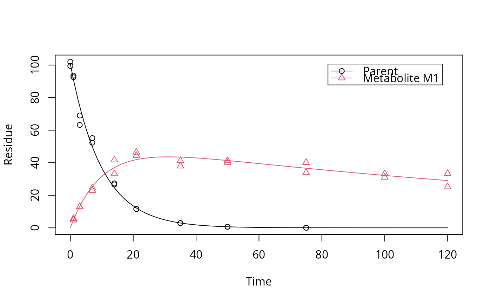
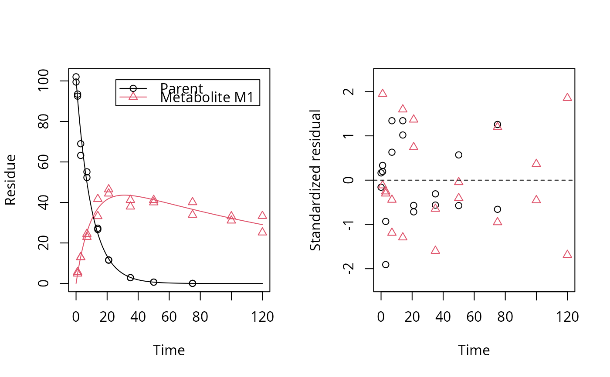
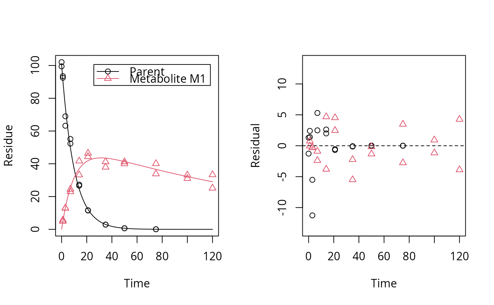

plot.mkinfit.RdSolves the differential equations with the optimised and fixed parameters
from a previous successful call to mkinfit and plots
the observed data together with the solution of the fitted model.
If the current plot device is a tikz device,
then latex is being used for the formatting of the chi2 error level,
if show_errmin = TRUE.
# S3 method for mkinfit plot(x, fit = x, obs_vars = names(fit$mkinmod$map), xlab = "Time", ylab = "Observed", xlim = range(fit$data$time), ylim = "default", col_obs = 1:length(obs_vars), pch_obs = col_obs, lty_obs = rep(1, length(obs_vars)), add = FALSE, legend = !add, show_residuals = FALSE, maxabs = "auto", sep_obs = FALSE, rel.height.middle = 0.9, lpos = "topright", inset = c(0.05, 0.05), show_errmin = FALSE, errmin_digits = 3, …) plot_sep(fit, sep_obs = TRUE, show_residuals = TRUE, show_errmin = TRUE, …)
| x | Alias for fit introduced for compatibility with the generic S3 method. |
|---|---|
| fit | An object of class |
| obs_vars | A character vector of names of the observed variables for which the data and the model should be plotted. Defauls to all observed variables in the model. |
| xlab | Label for the x axis. |
| ylab | Label for the y axis. |
| xlim | Plot range in x direction. |
| ylim | Plot range in y direction. |
| col_obs | Colors used for plotting the observed data and the corresponding model prediction lines. |
| pch_obs | Symbols to be used for plotting the data. |
| lty_obs | Line types to be used for the model predictions. |
| add | Should the plot be added to an existing plot? |
| legend | Should a legend be added to the plot? |
| show_residuals | Should residuals be shown? If only one plot of the fits is shown, the residual plot is in the lower third of the plot? Otherwise, i.e. if "sep_obs" is given, the residual plots will be located to the right of the plots of the fitted curves. |
| maxabs | Maximum absolute value of the residuals. This is used for the scaling of the y axis and defaults to "auto". |
| sep_obs | Should the observed variables be shown in separate subplots? If yes, residual plots requested by "show_residuals" will be shown next to, not below the plot of the fits. |
| rel.height.middle | The relative height of the middle plot, if more than two rows of plots are shown. |
| lpos | Position(s) of the legend(s). Passed to |
| inset | Passed to |
| show_errmin | Should the FOCUS chi2 error value be shown in the upper margin of the plot? |
| errmin_digits | The number of significant digits for rounding the FOCUS chi2 error percentage. |
| … | Further arguments passed to |
The function is called for its side effect.
# One parent compound, one metabolite, both single first order, path from # parent to sink included, use Levenberg-Marquardt for speed SFO_SFO <- mkinmod(parent = mkinsub("SFO", "m1", full = "Parent"), m1 = mkinsub("SFO", full = "Metabolite M1" ))#># Show the observed variables separately plot(fit, sep_obs = TRUE, lpos = c("topright", "bottomright"))# Show the observed variables separately, with residuals plot(fit, sep_obs = TRUE, show_residuals = TRUE, lpos = c("topright", "bottomright"), show_errmin = TRUE)# The same can be obtained with less typing, using the convenience function plot_sep plot_sep(fit, lpos = c("topright", "bottomright"))